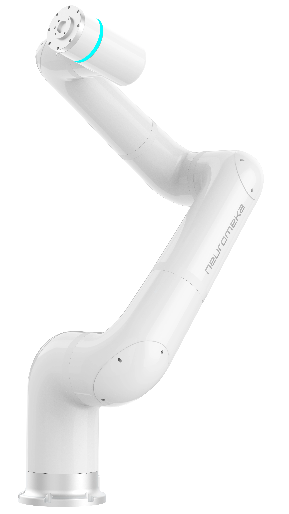

1. 문제와 시스템 계약
1.1 Independent Robots, One Pipeline
기존 시스템은 여러 robot을 등록할 수 있는 부분이 있었지만, 수집과 실행은 active_robot_id 또는 collector.robot_id 하나를 중심으로 움직였습니다. Indy12 두 대를 연결하려면 두 장비의 상태를 같은 episode에 기록하고, 두 대의 입력을 학습에 사용하며, 모델 출력을 다시 각 controller에 보내는 경로가 모두 필요했습니다. Visualization과 Replay도 이 episode를 한 대의 데이터로 축소하지 않아야 했습니다.

실제 대상은 독립된 Indy12 두 대입니다. 공식 단일 제품 사진으로 장비 형태를 보여 줍니다. 두 대의 배치나 내부 시연 장면을 재현한 사진은 아닙니다.
| 구성 | 로봇 identity / segment | 변경할 수 없는 차이 |
|---|---|---|
| 단일 dual-arm robot | 한 robot 내부 left / right | 같은 로봇 모델 안의 팔 segment |
| Independent Indy12 ×2 | 각 robot 내부 arm | 서로 다른 controller·등록 identity·EE owner |
| 공통 session | 두 participant + 안정된 순서 | 한 source timeline과 로봇별 의미를 함께 유지 |
처음부터 임시 dual_indy12를 만들어 두 로봇을 left/right에 끼워 넣는 대안도 검토했습니다. 최종적으로는 robot-keyed 경로를 추가했습니다. 양팔 segment와 독립된 로봇 instance를 같은 개념으로 만들면 EE 소속과 모델 출력 라우팅이 배열 위치에 의존하게 되기 때문입니다. 기존 dual-arm의 left/right 의미는 별도로 보존했습니다.
직접 확장한 범위는 Indy12 profile, session 설정·수집·schema, 학습 artifact의 owner 계약, inference 연결, Visualization과 Replay입니다. 로봇 SDK와 기존 제어·학습·EE adapter는 재사용했습니다. 우선 Indy12 두 대에 적용하되, 처음부터 추후 N대까지 확장할 수 있도록 고려해 개발했습니다. 이를 위해 두 대 전용 left/right 구분에 묶지 않고, session 참가 목록과 stable order, robot별 식별자·데이터 namespace·EE 소유권을 명시적으로 관리하도록 설계했습니다.
1.2 Identity Is Not Order, and Focus Is Not Participation
| 필드 | 의미 | 혼동했을 때 |
|---|---|---|
| participant_robot_ids | 설정에서 의도한 참가 집합 | 등록된 모든 장비가 자동 참가 |
| session_robot_ids | 실행·수집에 resolve된 참가 집합 | 화면 focus 한 대만 저장 |
| robot_id | runtime에서 조작할 대상 | 저장 순번을 실제 장치로 오해 |
| robot_key | raw·학습·모델의 owner key | 배열 block을 잘못된 장치에 전송 |
| robot_order | 직렬화·표시·결합의 안정된 순서 | 동일 shape의 block 의미가 교환 |
| primary_robot_id / active selector | 단일 focus 화면의 기본 대상·호환 선택 | 다른 robot 선택 시 session 전체가 변경 |
| ee_contract | robot별 gripper / hand 계약 | 첫 등록 EE 또는 반대 robot에 명령 |
robot_key는 runtime id나 명시된 key를 저장에 안전한 문자열로 정규화해 만듭니다. 정규화 과정에서 같은 key가 나오면 registry가 suffix로 충돌을 구분합니다. 따라서 key를 하드웨어 serial과 같은 영구 identity로 볼 수는 없습니다. 등록 이름·구성 변경 뒤에는 기존 artifact와의 key 대응을 확인해야 하고, episode는 당시 map을 metadata에 고정해야 합니다.
예를 들어 A와 B가 참여한 상태에서 Move Robot의 focus만 B로 바꿔도 수집 참가자는 여전히 A와 B입니다. 반대로 A를 삭제하면 participant·order·primary의 A 참조를 정리해야 합니다. 화면에 무엇을 먼저 보여 줄지와, 파일에 누구의 값을 기록할지는 서로 다른 질문이었습니다.
1.3 Architecture: Carry Ownership Across Every Boundary
개발 순서는 core profile과 runtime session 계약에서 시작했습니다. 그 위에 Configuration, Move Robot, Collect, Training, Deploy, Visualization, Replay를 연결했습니다. UI selector부터 늘리면 저장 계약이 뒤따라오지 못하고, 학습부터 늘리면 출력이 어느 worker로 돌아갈지 불명확해집니다. 각 단계가 다음 단계에 넘겨야 할 정보를 먼저 정하는 순서로 진행했습니다. 두 대라는 개수를 기준으로 모듈을 나누기보다, 참가 목록과 robot별 계약을 처리하는 구조로 경계를 나눴습니다. 추후 N대로 확장할 때도 등록·수집·학습·실행이 같은 participant와 owner 정보를 이어받도록 하기 위한 설계입니다.
Capture start에서는 설정을 runtime 계약으로 resolve하고, 참가자·순서·primary·EE 소속을 검사한 뒤 recording metadata에 고정합니다. 이후 학습은 현재 Configuration을 다시 읽어 과거 episode의 의미를 재구성하지 않습니다. 모델 실행 시점에만 artifact의 기대 계약과 현재 live session을 비교합니다.
서비스를 나눠 실행하는 구성에서는 브라우저와 gateway가 의도를 전달하고, 장치·수집 owner가 live 상태를 제공하며, 데이터 처리 쪽이 raw·processed·model artifact를 관리합니다. 모델 실행 경로는 live observation을 받아 owner가 붙은 command를 장치 경계로 보냅니다. 같은 저장 폴더를 사용한다고 여러 process의 registry나 worker가 자동 공유되는 것은 아닙니다.
2. 실행 구조와 운영
2.1 Session Setup, Presets & Stale Reference Repair
Session Setup에 Participants, Stable Order, Primary Robot을 추가하고 preset에도 함께 저장하도록 했습니다. 프런트엔드는 설정을 편집하는 역할이며, 유효한 session인지 결정하는 규칙은 backend에 두었습니다. 로봇을 추가·삭제하거나 과거 preset을 불러온 뒤에도 같은 정규화 경로를 거치게 했습니다.
| 입력 상태 | 처리 | 보존할 의미 |
|---|---|---|
| 중복·없는 robot·부적합 type | 참가 목록에서 제거 | multi single-arm 후보만 유지 |
| 유효한 participant 순열 | 수동 robot_order 유지 | 등록 카드 순서로 덮어쓰지 않음 |
| 깨진 order | 남은 participant 순서로 재구성 | fallback 이름만 보고 사전순 정렬로 해석하지 않음 |
| 삭제된 primary | 남은 ordered participant로 보정 | 없는 장치를 기본 대상으로 남기지 않음 |
| preset save / load / reset | session_config round-trip 및 재정규화 | UI의 일회성 선택으로 소실되지 않음 |
예를 들어 participants가 [A,B], order가 [B,A], primary가 A일 때 A를 삭제하면 [B]와 primary B가 남아야 합니다. 유효한 수동 순서를 보존하면서 실제 등록 집합과 어긋나는 참조만 없앴습니다. Legacy collector 필드도 연결했지만, 녹화 중인 source identity를 화면 선택만으로 임의 변경하는 방식으로 동기화하지 않았습니다.
조작 route도 teach·compliance·simulation·jog·recover 등에서 명시적인 robot_id와 등록 여부를 검사하도록 정리했습니다. Teach state와 scope를 robot별 map에 남기고, 각 robot의 worker로 제어를 분리했습니다. 화면에서 B를 선택한 뒤 A의 teach 상태를 전체 상태처럼 재사용하면 명령 대상은 맞더라도 mode 판단이 틀릴 수 있기 때문입니다.
Move Robot은 session participant를 stable order로 표시하고 primary를 기본 focus로 사용합니다. Saved Position과 개별 조작은 선택 robot의 소유 상태입니다. 한 대를 조그하는 화면과 세션 전체를 기록하는 화면이 같은 선택값을 공유해도 된다는 전제를 여기서 끊었습니다.
2.2 Session Mode Transition, Rollback & Collect Stop
실물 사용 중 Collect Data에서 TeleT로 바꾸면 Move Robot에서 선택된 로봇만 teleop mode로 전환됐습니다. 처음에는 tele 진입 요청에 session scope를 붙였지만, idle로 돌아갈 때 UI의 단일 robot 상태로 scope를 추정해 다시 한 대만 전환되는 문제가 남았습니다. Stop도 collector.robot_id 하나만 읽고 있었습니다.
Collect 전환에는 apply_collect_session 의도를 전달하고, backend가 resolve한 robot_order 전체로 전환을 순회하도록 바꿨습니다. 프런트엔드는 preflight로 받은 collect session을 유지하고 status에서도 동기화합니다. 따라서 idle 요청도 현재 focus robot의 버튼 상태가 아니라 collect session 계약을 기준으로 보냅니다.
Non-idle 전환 도중 실패하면 이미 전환된 로봇들을 역순으로 idle 복귀시키고, 복귀 실패도 응답에 남깁니다. collect stop의 대상도 robot_order→session_robot_ids→legacy 단일 대상 순으로 resolve했습니다. 다만 controller 호출은 순차적이고 idle 전환 자체도 실패할 수 있습니다. “전체 대상에 요청하는 정책”과 “물리적으로 모두 정지했음을 확인한 결과”를 동일하게 표현하지 않았습니다.
2.3 End-Effector Ownership: Display Scope vs Command Target
Indy12 두 대와 Tesollo 두 개를 수집했을 때 raw H5에는 두 손이 나뉘어 있었지만, capture plan과 일부 metadata는 선택된 한 robot의 손만 설명했습니다. Collect의 EE 패널도 active robot에 묶여 있었고 서로 다른 손을 모두 Right hand로 표시했습니다. 한 single-arm에 붙은 손의 side 표기만으로는 어느 robot을 조작하는지 알 수 없었습니다.
| 범위 | 변경 | 이유 |
|---|---|---|
| 표시 | session participant 전체 EE를 order대로 표시 | 운영자가 기록 대상 전체를 볼 수 있게 함 |
| 명령 | 각 EE action이 자기 owner robot_id를 전달 | 패널 전체를 보여 줘도 focus robot으로 보내지 않음 |
| 저장 계획 | session EE catalog와 구체 persisted key 생성 | raw·metadata·capture plan이 같은 집합을 설명 |
등록된 explicit robot_id를 우선하고 과거 robot_ref 표현은 호환 경로로 읽었습니다. 단일 robot의 owner 없는 entry를 허용하던 편의 규칙은 여러 robot에서 그대로 적용할 수 없었습니다. EE 명령도 device id만 보내지 않고 owner를 함께 검사해, 화면에 남은 A의 손 선택을 B의 명령으로 사용하지 않도록 했습니다.
표시 이름은 Indy12-#01 hand처럼 owner를 먼저 드러내되, 그 이름을 저장 key로 다시 파싱하지 않습니다. 사람이 읽는 label, runtime target, storage key를 구분해야 이름을 바꾸는 UI 수정이 실제 소속까지 바꾸지 않습니다.
3. 수집과 데이터 계약
3.1 Raw v5: One Episode, Robot-Scoped Streams
| Raw suffix: robot.<key>.* | 학습 key: 해당 robot 아래 | 변환 의미 |
|---|---|---|
| proprio.q / qdot | observation.robot.<key>.qpos / qvel | 관측 관절; degree→radian |
| proprio.arm.p | observation.robot.<key>.position / orientation | mm·Euler degree→m·3×3 rotation |
| control.arm.teleop_command | action.robot.<key>.end_pos / end_ori | 명령 target의 위치·회전 |
| control.gripper.position_target / force_target | action.robot.<key>.gripper.* | 부착 장치 계약의 단위 유지 |
| hand.feedback.joint_pos_deg / joint_vel_deg_s | observation.robot.<key>.hand.* | 손 telemetry의 명시된 degree 단위 유지 |
| hand.command.* | action.robot.<key>.hand.* | 손 target와 grasp intent |
| camera.<name>.* / metadata.video_files | observation.images.rgb.<name> | 공통 camera stream·MP4 참조 |
Episode metadata에는 session_mode, session_robot_ids, robot_order, primary_robot_id, robot_map, ordered robots, EE 정보를 남겼습니다. Raw의 robot_map은 robot_id→robot_key 대응이고, 학습·모델 artifact의 robot_map은 robot_key→모델·차원 등의 entry 형태로 사용됩니다. 필드 이름이 같다고 직렬화 방향까지 같다고 가정하면 안 됩니다.
기존 single-robot은 unified_capture/v4와 top-level/segment 계약을 유지하고, 다중 session을 unified_capture/v5의 robot namespace로 추가했습니다. 과거 파일을 전부 새 namespace로 덮어쓰지 않으므로 기존 reader와 checkpoint의 의미를 보존할 수 있습니다. 추후 로봇 수가 늘어나도 robot별 namespace를 추가하고 참가 목록·order·metadata로 해석할 수 있도록, 두 대 전용 필드를 늘리는 대신 같은 저장 규칙을 robot_key별로 적용했습니다.
3.2 Shared Sample Index Is Not Simultaneous Sensing
Collect 시작 전에는 참가 집합과 order·primary의 일치, 등록 여부, readable snapshot, owner별 EE 계약을 검사합니다. Indy12 적용 조건은 preflight 정책에 두고, 참가 목록·owner·저장 namespace를 처리하는 공통 구조와 분리했습니다. 장비별 조건을 바꾸는 지점과 로봇 수 확장을 처리하는 지점을 구분하기 위해서입니다. Preflight가 실패하면 recording 전체를 시작하지 않습니다.
Capture worker는 한 sample을 만들 때 session 참가자들의 control snapshot을 순회 조회합니다. 필요한 participant의 snapshot이 없으면 해당 sample을 drop하는 경로를 두었습니다. primary만 성공했다고 나머지 robot의 상태가 빠진 sample을 정상으로 취급하지 않기 위해서입니다.
공통 capture tick은 한 episode row에 여러 robot 상태를 묶는 application 기준입니다. 조회는 순차적이며 controller의 snapshot 갱신 시각과 camera frame 시각은 서로 다를 수 있습니다. sample monotonic time, UTC time, 장치별 timestamp·validity를 남기는 이유도 이 차이를 나중에 구별하기 위해서입니다. 한 index를 공유한다는 사실만으로 물리적 동기 오차가 0이라고 해석하지 않습니다.
이미지는 HDF5 내부 RGB dataset뿐 아니라 metadata.video_files가 가리키는 sidecar MP4로 저장됩니다. 같은 이름의 영상이 폴더에 있다는 것만으로 충분하지 않고, metadata의 참조가 실제 dataset context에서 접근 가능해야 합니다. Camera는 각 robot namespace 안에 복제하지 않고 session의 공통 관측 stream으로 취급했습니다.
3.3 Capture Debugging: Schema Presence vs Real Signal
| 증상 | 원인 / 확인 | 수정 |
|---|---|---|
| Indy12가 Indy7로 저장 | profile alias가 metadata까지 전파되지 않음 | canonical model과 capture metadata 전파 정리 |
| teleop / hand joint command key 누락 | 값이 없는 sample에서 namespace 미생성 | 필수 계약 key의 default row materialization |
| 손 두 개 raw, plan은 하나 | active robot 기준 catalog | session 전체 EE와 owner별 key로 plan 수정 |
| plan header·persisted key가 단일 구조 | v5 writer와 plan 설명 불일치 | session header·robot_map·구체 namespace 일치 |
| H5 내부 RGB dataset 없음 | 실제로는 MP4 sidecar 참조 | 영상 누락과 저장 방식 차이를 분리 |
필수 key를 항상 만들도록 고친 뒤에도 teleop target 값이 모두 0인 episode가 있었습니다. 이는 key 누락과 다른 문제입니다. Default row는 schema를 안정적으로 읽게 해 주지만 실제 명령이 존재했다는 증거는 아닙니다. 전처리·Replay는 해당 single-arm capture의 placeholder 의미를 해석하고 유효한 측정 pose를 사용하는 별도 경로가 필요했습니다.
Raw H5만 정상이라고 끝내지 않고 plan, metadata, required key, owner별 hand 집합을 함께 대조했습니다. 수정 전부터 저장돼 있던 task의 plan 파일은 자동으로 모두 rewrite한 것이 아니므로, 최신 plan을 다시 저장하고 새 episode로 수집해 정합성을 확인했습니다. 과거 artifact를 고친 코드가 소급해 복구한다고 가정하지 않았습니다.
4. 학습과 실시간 추론
4.1 Robot-Keyed Training: Preserve the Selected Key Order
Raw-to-training adapter를 분리해 각 robot의 observation과 action을 같은 robot_key 아래에서 변환했습니다. Backend schema는 training_contract, robot_key_order와 사용자 label을 제공하고, 선택된 input/output key와 shape를 전처리 artifact에 남깁니다. 모델에 들어가는 숫자 배열은 이 선택 key 순서와 차원 정보를 기준으로 결합·분해합니다.
설명용으로 6축 A와 B의 qpos만 선택하면 관절 관측 scalar는 6+6=12입니다. qvel까지 선택하면 24가 됩니다. 이는 선택한 데이터 벡터의 폭이며 robot 한 대의 기계적 자유도가 증가한 것이 아닙니다. Hand·camera·previous command와 action의 회전 표현까지 포함한 총 차원은 실제 선택 key와 provider 표현으로 계산해야 합니다. 모든 다중 robot 모델에 하나의 고정 차원을 부여하지 않았습니다.
같은 6개 값 두 묶음의 순서를 바꿔도 tensor shape는 그대로입니다. 따라서 shape 검사만으로 owner가 올바른지 알 수 없습니다. Canonical key와 명시적인 order를 보존하고, 출력 block에 다시 robot_key를 붙이는 경계가 필요했습니다. N대 확장에서도 학습 배열과 실제 robot의 대응을 유지하도록, 두 개의 고정 block 대신 선택 key 목록과 key별 shape로 결합·분해 경계를 표현했습니다. 로봇이나 EE 구성이 추가되면 그 구성을 설명하는 key·차원·owner 계약을 함께 전달하는 방식입니다.
4.2 Units, Relative Pose & Previous Hand Commands
이 변환은 key 이름만 바꾸는 작업이 아닙니다. Robot q·qdot는 degree에서 radian으로, task position은 mm에서 m로 바꿉니다. Euler degree는 3×3 rotation matrix로 변환합니다. 반면 이름에 degree가 명시된 hand joint stream은 해당 계약을 유지합니다. 모든 관절 숫자에 같은 변환을 일괄 적용하면 hand target의 의미가 깨집니다.
상대 action은 raw의 새로운 측정 stream이 아니라, canonical 현재 pose와 absolute target에서 파생되는 학습 표현입니다. 실행 시에는 각 robot의 현재 위치 p와 회전 R로 local translation·rotation delta를 복원하고, controller로 보낼 때 위치를 mm와 Euler 표현으로 되돌립니다. 위 식은 이 구현의 복원 규칙이며 새로운 실측 결과가 아닙니다. 두 로봇의 world 좌표계를 자동 보정하거나 공통 calibration을 새로 만든 작업도 아닙니다.
Tesollo previous-command context도 robot별로 분리했습니다. t≥1에서는 해당 손의 t−1 command를 observation으로 사용하고 첫 row는 첫 command를 복사합니다. 이는 측정된 hand feedback이 아니라 이전에 지시한 grasp state·mode·force입니다. 다른 robot의 command를 넣거나 현재 action을 그대로 관측으로 취급하지 않도록 시간과 owner 의미를 함께 유지했습니다.
4.3 Artifact Lineage: Keep Meaning After the Process Ends
| 단계 | 보존하는 계약 | 다음 단계에서 필요한 이유 |
|---|---|---|
| Raw episode | session·ordered robots·id→key·EE 소속 | 현재 등록 목록 없이 기록 해석 |
| PreprocessSpec / processed manifest | canonical key·shape·단위·training_contract | 학습 입력·출력 재현 |
| Run manifest / metadata / resume state | robot_keys·robot_map·ee_contract | 학습 재개·산출물 설명 |
| Checkpoint / bundle-v2 model_contract | inference_contract·session_mode·robot_order 및 IO | live 구성과 compatibility 검사 |
| Runtime robot_index | key→현재 robot_id·모델·worker 대응 | 모델 출력을 실제 owner에게 전송 |
Runtime session이 맞아도 metadata가 중간에서 사라지면 모델을 다시 로드할 때 파일명이나 key prefix로 의미를 추정해야 합니다. 그래서 전처리·학습·checkpoint·deploy가 같은 owner 계약을 이어받도록 했습니다. 모델 weight만 저장하는 것으로는 충분하지 않았습니다. 어떤 observation과 action을 어떤 순서로 학습했는지도 실행에 필요한 정보입니다. 참가 로봇이 늘어나는 경우에도 같은 방식으로 정보를 이어갈 수 있도록, 특정 두 robot의 이름을 전제로 하지 않고 robot_keys와 robot별 계약 entry를 저장하도록 했습니다.
기존 artifact의 legacy segmented 경로는 유지하면서 새 필드를 additive하게 넣었습니다. 새 metadata를 모르는 과거 consumer가 있다는 사실과, 새 robot-keyed 모델이 owner 계약 없이 안전하게 실행될 수 있다는 주장은 별개입니다. Legacy 지원을 이유로 다중 로봇의 모호한 소속을 첫 robot으로 보정하지는 않았습니다.
4.4 Live Inference: Compatibility, Decode & Owner Routing
| 차이 | 처리 | 해석 |
|---|---|---|
| session mode·robot count·필수 key 누락/추가 | blocker | 다른 세션 의미로 실행하지 않음 |
| 알려진 robot model/type·joint width 불일치 | blocker | 같은 scalar 수만으로 호환 판단하지 않음 |
| 필수 EE category·hand profile·joint width 불일치 | blocker | 손 종류와 action 의미 확인 |
| 기대 gripper force 차원 부족 | warning 경로 | 모든 EE 차이가 일괄 hard block인 것은 아님 |
| key와 계약은 같고 runtime id / label만 변경 | warning 경로 | 표시 이름과 storage owner 구분 |
| 명시한 command owner를 찾지 못함 | target resolve 실패 | legacy 기본 선택으로 타 robot에 전달하지 않음 |
Live 입력은 session의 각 robot snapshot에서 observation.robot.<key>.*로 조립합니다. Action builder는 action.robot.<key>.*를 읽어 robot_id·segment·arm index와 팔·EE payload를 포함한 command를 만듭니다. Worker가 command를 순회하고 actuator 경계가 owner를 확인해 해당 robot worker와 attachment로 전달합니다. 추후 N대에서도 같은 owner 해석·전송 규칙을 적용할 수 있도록, A/B 전용 전송 경로를 각각 만드는 대신 robot_key로 대상 entry를 찾고 command 목록을 순회하는 구조를 사용했습니다.
Robot id나 key를 명시했는데 session에서 찾지 못하면 resolve 실패로 반환합니다. 소속이 없는 기존 single-robot 호출을 위한 기본 선택 경로는 남아 있지만, 이를 robot-keyed command의 owner 실패에 사용하지 않습니다. 같은 숫자를 다른 controller가 받아도 API가 성공할 수 있기 때문에, 전송 전에 소속을 확정하는 것이 중요했습니다.
Compatibility 검사는 metadata에 제공된 model·차원·profile을 사용합니다. 누락된 필드가 있는데도 serial 수준의 동일 장비나 실제 task 성공까지 입증하는 검사는 아닙니다. 또한 두 robot command는 application loop에서 순회 전송하므로 단일 학습 step을 공유하는 것과 controller의 물리적 동시 실행은 구분합니다.
4.5 Readiness Failures That Looked Like Multi-Robot Errors
| 겉으로 보인 문제 | 실제 확인 | 수정 / 판단 |
|---|---|---|
| 학습 readiness blocked | 단독 H5 검사 위치에 sidecar MP4 없음 | robot dimension 오류와 분리; 실제 데이터 context 확인 |
| hand 없는 모델의 입력 누락 | robot-keyed input이 legacy fast path로 진입 | robot-keyed observation은 전용 전처리 경로로 유지 |
| 선택 안 한 camera까지 요구 | camera_bindings에 남은 항목을 필수로 해석 | 실제 selected camera_names와 요구 입력 기준 사용 |
| 두 팔만 움직이고 EE는 없음 | checkpoint에 EE action head가 없음 | arm-only 계약에서 정상; attachment 등록과 output 선택은 별개 |
카메라를 제외한 state-only 조건에서는 raw→processed 변환과 1 epoch smoke training으로 robot·hand dimension이 연결되는지 검사했습니다. 이 검사는 최적화 loop에 들어갈 수 있다는 확인이지 충분히 학습된 policy의 task 성능이 아닙니다. H5를 따로 옮겨 확인할 때 MP4가 없었던 상황도 실제 원격 dataset에 영상이 없었다는 뜻으로 확대하지 않았습니다.
Arm-only artifact는 두 robot의 position·orientation output이 있어 command를 각각 만들 수 있었지만 gripper·hand output은 없었습니다. “등록된 손이 왜 안 움직이나”를 device routing 버그로 바로 단정하지 않고, 선택 output과 EE contract부터 확인했습니다. 당시 점검한 readiness·input shape·decode 결과와 model weight를 로드한 실물 rollout 전체를 구분했습니다.
5. 시각화와 Replay
5.1 Robot-Aware Views Without Changing Data Meaning
Graph와 Table은 robot-aware catalog를 backend에서 받아 owner별로 묶습니다. Graph에서는 Arm Filter로 robot을 선택하고, Proprio·Control·Peripheral checkbox로 signal 종류를 고릅니다. 한 로봇의 left/right segment 선택과 여러 robot 선택은 UI의 비슷한 조작이지만 underlying owner 의미는 다릅니다.
Single-robot의 익숙한 필터 방식은 재사용하되 multi-robot 자체를 primary 한 대의 화면으로 합치지 않았습니다. Table은 각 robot의 column group을 유지하고, Replay는 session 전체 target과 robot_results를 보여 줍니다. Graph UI를 바꾸는 수정이 Table이나 Replay 대상 집합을 덮어쓰지 않도록 경로를 분리했습니다.
사용자에게는 Indy12-#01·Task Pos(p)처럼 읽을 수 있는 이름을 보여 주고 실제 stored raw key는 유지합니다. Browser가 문자열에 left/right가 있는지만 보고 분류하는 대신, backend가 제공한 owner와 signal catalog를 사용하게 했습니다.
5.2 Graph Debugging: Data, Requests and Rendering Are Separate
| 증상 / 관찰 | 조사 결과 | 최종 조치 |
|---|---|---|
| Table은 보이는데 Graph는 없음 | raw에는 robot별 series가 있으나 processed detail·task identity 경로가 다름 | source H5 fallback·task/episode identity 보존 |
| Loading 상태 지속 | detail이 integrity·table 응답을 함께 기다림 | detail 완료 시 graph 먼저 render; 부가 요청 독립 |
| detail도 늦게 반환 | plot payload 생성에 RGB MP4 preview decode가 결합 | include_images=0 plot과 RGB preview 분리 |
| 응답 뒤에도 빈 화면 | escapeHtml 미정의·legend 초기화 전 참조 | helper 정의·초기화 위치 수정; 실제 브라우저 예외 확인 |
| 필터 UI 수정 후 primary만 표시 | single/multi 분기와 table/replay 역할이 혼합 | robot-aware graph와 독립 table·target panel 복구 |
H5를 읽는 함수가 성공해도 사용자가 graph를 볼 수 있는 것은 아니었습니다. 처음의 schema·lookup 수정은 필요한 부분이었지만, media decode가 응답을 막거나 JS exception이 render를 끊는 문제까지 해결하지 못했습니다. 실제 페이지에서 dataset을 선택하고 응답·runtime error·그려진 card와 filter 동작을 함께 확인한 뒤에야 미출력 경로를 닫을 수 있었습니다.
이후 검사에서는 카드 개수만 보지 않고 robot 선택 시 해당 robot의 signal과 공통 camera signal이 남는지 확인했습니다. 빈 상태에는 명시적인 오류나 loading을 표시해, 데이터 없음과 요청 실패·render 실패가 같은 흰 화면으로 보이지 않게 했습니다.
5.3 Session Replay: Concurrent Alignment and One Source Clock

처음에는 primary가 정렬을 끝낸 뒤 secondary가 움직였습니다. 요청한 동작은 두 robot의 시작 정렬을 함께 시작하되, 각자 도달·정착을 확인하고 모두 준비됐을 때만 recorded timeline을 여는 것이었습니다. 공통 start event, robot별 alignment thread, join/all-ready barrier와 중단 event로 이 조건을 구현했습니다.
두 대 모두 plan에 있는데 Replay가 느리게 보인 경우도 있었습니다. 해당 single-arm episode의 teleop target은 zero placeholder였고 실제 proprio pose는 존재했습니다. 이때 유효한 task command가 없다고 joint fallback으로 내려가며 frame 선택과 실행 경로가 달라졌습니다. 해당 capture 형식의 placeholder를 측정 pose로 해석하는 경로를 추가해 task Replay로 연결했습니다. 모든 0 좌표를 잘못된 데이터로 취급하는 규칙은 아닙니다.
본 재생은 공통 source index에서 각 robot의 팔·EE를 실행하고 per-robot 결과를 남깁니다. 정렬 실패는 다른 정렬도 중단하고 stop을 요청하며, 본 실행 실패는 세션을 종료하고 참가자 정리를 시도합니다. 실패를 무시한 채 살아 있는 한 대만 계속 실행하는 정책은 아닙니다. 자세한 command 유지·도달 판정·시간축은 Robot Replay·안전 로직 보고서에서 설명합니다.
6. 검증과 설계 판단
6.1 Validation by Boundary, Not by a Single Success Flag
| 검사 경계 | 확인한 내용 | 입증하는 범위 |
|---|---|---|
| 설정·preset | 참가자·order·primary 복원, 삭제 후 정리 | 유효한 session 정의 유지 |
| 모드·EE | session fanout·부분 실패 rollback·owner guard | focus 한 대로 잘못 축소되지 않음 |
| 수집 파일 | raw key·model·plan·EE 집합·sidecar 참조 대조 | 저장 계약과 실제 기록의 정합성 |
| 전처리·학습 | robot-keyed mapping·hand width·state-only smoke | 학습 입력·출력 경로 연결; 성능 평가와 별개 |
| 추론 | required live input·compatibility·robot별 decode | owner가 붙은 명령 생성; 전체 실기 rollout과 별개 |
| Visualization | 실제 dataset 선택·graph·table·filters·JS error | 브라우저에서 데이터 탐색 가능 |
| Replay | 두 target·동시 정렬·barrier·source index·실물 동작 | 사용한 다중 robot 구성의 재생 동작 |
| 기존 경로 | single v4·dual-arm segmented 소비 | 새 경로가 기존 owner 의미를 덮어쓰지 않음 |
검사 순서를 설정→저장→학습→실행으로 나눈 것은 한 번의 성공 표시로 전체를 대표하지 않기 위해서였습니다. H5에 두 로봇이 있어도 plan은 한 대일 수 있었고, 두 action block이 있어도 hand output은 없을 수 있었습니다. 같은 단계에서도 정상 조건뿐 아니라 삭제된 participant, 잘못된 model·hand profile, 부분 mode 전환 실패를 별도로 다뤘습니다.
당시 개발 과정에서는 synthetic 검사, 학습 smoke, command decode와 실제 동작 확인을 단계별로 나눴습니다. 참가 목록부터 저장 key·모델 metadata·전송 대상까지 같은 robot을 가리키는지 대조하고, 각 경계에서 owner와 순서가 유지되는지를 확인했습니다.
6.2 Engineering Note
이 작업에서 가장 크게 바뀐 생각은 여러 로봇을 지원하는 일은 호출 횟수를 늘리는 것보다, 시스템이 숨기고 있던 단일 대상 가정을 찾아내는 일이라는 점입니다. 설정은 두 대인데 plan은 한 대, raw에는 두 손인데 패널은 한 손, stop은 선택된 한 대만 처리했습니다. 서로 다른 버그처럼 보였지만 모두 “현재 선택이 전체 작업을 대표한다”는 같은 가정에서 나왔습니다. 두 대의 동작을 구현하면서도 추후 N대 확장을 고려했기 때문에, 이 가정을 두 대 전용 예외로 덮기보다 참가 집합과 robot별 책임을 명시하는 방향으로 바꿨습니다.
또한 identity와 순서가 다르다는 것을 실제 데이터로 배웠습니다. Shape가 같은 block을 바꾸면 오류 없이 다른 로봇의 동작이 됩니다. Metadata는 숫자 옆에 붙는 설명이 아니라, 숫자를 어떤 장치의 어떤 의미로 실행할지 결정하는 구성 요소였습니다. 이후에는 배열을 합치기 전에 owner·단위·좌표·시간을 어떻게 되찾을지 먼저 설계하게 됐습니다.
Graph를 여러 번 고치고도 화면이 비어 있었던 경험은 검증의 끝점을 바꿨습니다. Raw series와 API 응답이 정상인 것만 확인해서는 사용자의 문제가 해결되지 않았습니다. 문제가 관찰된 경계까지 직접 돌아가 확인해야 수정이 끝난다는 기준을 얻었습니다. 이 원칙은 수집 파일 검사와 모델 decode 이후 실제 장치 확인을 구분하는 방식에도 이어졌습니다.
References
- [P1] Neuromeka — Indy / Indy12
실제 사용한 Indy12의 제품 형태를 위한 공식 사진 출처. 제품 성능 사양을 다중 robot pipeline의 실측 결과로 사용하지 않습니다.